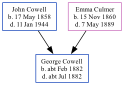

George Troward Cowell cFeb 1882 - c1882
[ Home ] | [ Calendar ] | [ Surnames Index ] | [ Family History ]The child of John Cowell (a farm waggoner) and Emma Culmer, George Cowell, the great-uncle of Nigel Horne, was born in Thanet, Kent, England c. Feb 18821,2 and baptized in Minster, Thanet, Kent, England on Feb 5, 1882.
He died c. Jul 1882 in Thanet2 and was buried in Minster on Jul 26, 1882.
Parents
- John was born on May 17, 1858
- Emma was born on Nov 15, 1860
Citations
- England & Wales births 1837-2006 - Findmypast
- England & Wales deaths 1837-2007 - Findmypast
Media
England & Wales births 1837-2006 - BMD/B/1882/1/AZ/000127/287
Kent Baptisms - GBPRS/CANT/B/96511908
England & Wales deaths 1837-2007 - BMD/D/1882/3/AZ/000068/220
Family Tree
Generated by Ged2Site. Last updated on Jul 20, 2025